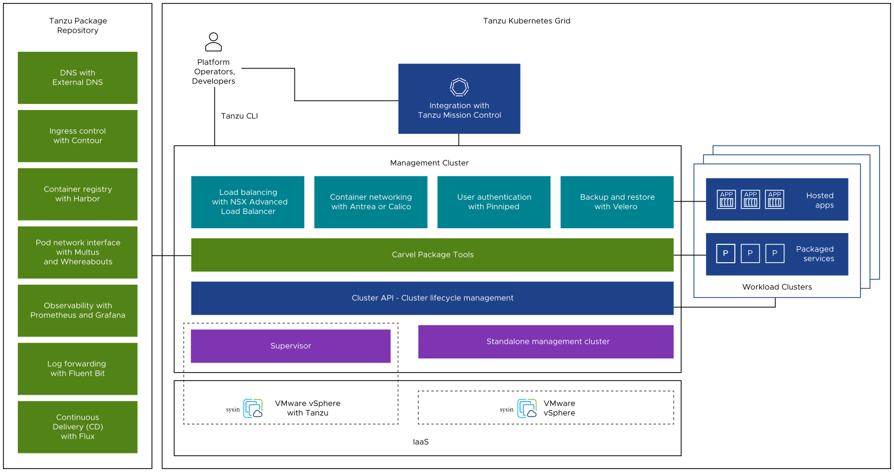

请访问原文链接：VMware Tanzu Kubernetes Grid (TKG) 2.5.2 - 企业级 Kubernetes 解决方案 查看最新版。原创作品，转载请保留出处。
作者主页：sysin.org
Tanzu Kubernetes 集群是由 VMware 构建、签名和支持的开源 Kubernetes 容器编排平台的完整分发版。可以通过使用 Tanzu Kubernetes Grid 服务在主管集群上置备和运行 Tanzu Kubernetes 集群。主管集群是启用了 vSphere with Tanzu 的 vSphere 集群。
关于 Tanzu Kubernetes Grid
Tanzu Kubernetes Grid 是一个用于部署、运行和管理托管应用程序的企业级 Kubernetes 集群的主机解决方案。
要部署和管理 Kubernetes 集群，Tanzu Kubernetes Grid (TKG) 使用从客户端 CLI 或 UI 中获取请求并使用集群 API 执行这些请求的管理集群，集群 API 是用于执行低级别基础架构和 Kubernetes 集群操作的标准开源工具。*
管理集群具有两个部署选项，这些选项在使用不同组件集的不同基础架构上运行：
- 主管是一个深度集成到 vSphere with Tanzu 的管理集群，除了支持 TKG 之外，还执行基础架构级别的功能。
- 独立管理集群是作为专用虚拟机运行的管理集群 (sysin)，可在多个云基础架构上支持 TKG。
在这两种情况下，管理集群都会发布一个 API，该 API 会封装并向集群 API 添加更高级别的功能。在客户端，Tanzu CLI 会封装并向 kubectl 和 clusterctl、Kubernetes 和集群 API CLI 添加更高级别的功能。
TKG 2 统一了这两个 TKG 部署选项的管理集群 API 和底层对象定义并在产品版本中受支持，如下所示：
- vSphere 8 支持主管的 TKG 2 API 和对象。
- TKG v2.1 和 Tanzu CLI v0.28.0 在没有主管、AWS 和 Azure 的 vSphere 6.7、7 和 8 上以及具有主管的 vSphere 8 上的独立管理集群支持 TKG 2 API 和对象。
- TKG v1.6.1 和 Tanzu CLI v0.25.4（以及 TKG 1.6.0 和 Tanzu CLI v0.25.0）支持具有主管的 vSphere 8 上的 TKG 2 API 和对象，以及没有主管、AWS 和 Azure 的 vSphere 6.7、7 和 8 上具有独立 TKG 1.6.x 管理集群的旧版集群基础架构。
主要特性
Tanzu Kubernetes Grid 服务置备的 Tanzu Kubernetes 集群具有以下特性：

Kubernetes 的固有安装
Tanzu Kubernetes 是 Kubernetes 的固有安装。
Tanzu Kubernetes Grid 服务提供经过深思熟虑的默认设置，并针对 vSphere 进行了优化 (sysin)，可用于置备 Tanzu Kubernetes 集群。通过使用 Tanzu Kubernetes Grid 服务，可以减少部署和运行企业级 Kubernetes 集群时通常需要的时间和工作量。
与 vSphere 基础架构集成
Tanzu Kubernetes 集群与底层 vSphere 基础架构相集成，该基础架构针对运行 Kubernetes 进行了优化。
Tanzu Kubernetes 集群与 vSphere SDDC 堆栈相集成，包括存储、网络连接和身份验证。此外，Tanzu Kubernetes 集群还构建于映射到 vCenter Server 集群的 主管集群 之上。由于这种紧密集成，运行 Tanzu Kubernetes 集群是统一的产品体验。
可用于生产
Tanzu Kubernetes 集群针对运行生产工作负载进行了调优。
Tanzu Kubernetes Grid 服务 置备可用于生产的 Tanzu Kubernetes 集群。您可以运行生产工作负载，而无需执行任何其他配置。此外，您可以确保可用性并允许 Kubernetes 软件进行滚动升级，并可在单独的集群中运行不同版本的 Kubernetes。
VMware 提供全面支持
Tanzu Kubernetes 集群受 VMware 支持。
Tanzu Kubernetes 集群使用 VMware 的开源 Photon OS，部署在 vSphere 基础架构上，并在 ESXi 主机上运行。如果您在使用堆栈的任何一层（从 Hypervisor 到 Kubernetes 集群）时遇到问题，只需与 VMware 这一家供应商联系即可。
由 Kubernetes 管理
Tanzu Kubernetes 集群由 Kubernetes 进行管理。
Tanzu Kubernetes 集群构建于 主管集群 之上，后者本身就是一个 Kubernetes 集群。Tanzu Kubernetes 集群在 主管命名空间 中通过自定义资源进行定义 (sysin)。可以使用熟悉的 kubectl 命令以自助方式置备 Tanzu Kubernetes 集群。整个工具链保持一致，无论是置备集群还是部署工作负载，您都可以使用相同的命令、熟悉的 YAML 和通用工作流。
Tanzu Kubernetes Grid 下载
VMware Tanzu Kubernetes Grid (TKG) 2.1.0
百度网盘链接：[EoD]
VMware Tanzu Kubernetes Grid (TKG) 2.2.0
百度网盘链接：[EoD]
VMware Tanzu Kubernetes Grid (TKG) 2.3.0
百度网盘链接：[EoD]
VMware Tanzu Kubernetes Grid (TKG) 2.4.0
百度网盘链接：[N/A]
VMware Tanzu Kubernetes Grid (TKG) 2.5.0
百度网盘链接：[EoD]
VMware Tanzu Kubernetes Grid (TKG) 2.5.1
百度网盘链接：[EoD]
VMware Tanzu Kubernetes Grid (TKG) 2.5.2
百度网盘链接：https://pan.baidu.com/s/1E-FzPbtH5BqaIzmLJ6Rydg?pwd=qiss
文件描述：详见下载
文件大小：约 16GB
解决方案组件：
- Kubectl 1.26-1.30 for VMware Tanzu Kubernetes Grid 2.5.2
- Kubernetes OVAs 1.26-1.30 for VMware Tanzu Kubernetes Grid 2.5.2 (For the management cluster, download Kubernetes v1.28.11 OVA)
- Photon v4 Harbor 2.10.3 OVA
- TKG Carvel Tools 2.5.2
- Tiny TKG OVAs 1.26-1.28 (does not support TMC integration)
- Crash Diagnostics 0.3.7 for Tanzu Kubernetes Grid 2.5.2
- Velero 1.13.2 for Tanzu Kubernetes Grid 2.5.2
配套组件：
TKG v2.5.x does not support NSX ALB v30.1.1+.
相关产品：VMware Tanzu Kubernetes Grid Integrated Edition (TKGI) 1.21 - 运营商 Kubernetes 解决方案

文章用于推荐和分享优秀的软件产品及其相关技术，所有软件默认提供官方原版（免费版或试用版），免费分享。对于部分产品笔者加入了自己的理解和分析，方便学习和研究使用。任何内容若侵犯了您的版权，请联系作者删除。如果您喜欢这篇文章或者觉得它对您有所帮助，或者发现有不当之处，欢迎您发表评论，也欢迎您分享这个网站，或者赞赏一下作者，谢谢！
 支付宝赞赏
支付宝赞赏  微信赞赏
微信赞赏赞赏一下
敬请注册！点击 “登录” - “用户注册”（已知不支持 21.cn/189.cn 邮箱）。 请勿使用联合登录（已关闭）。